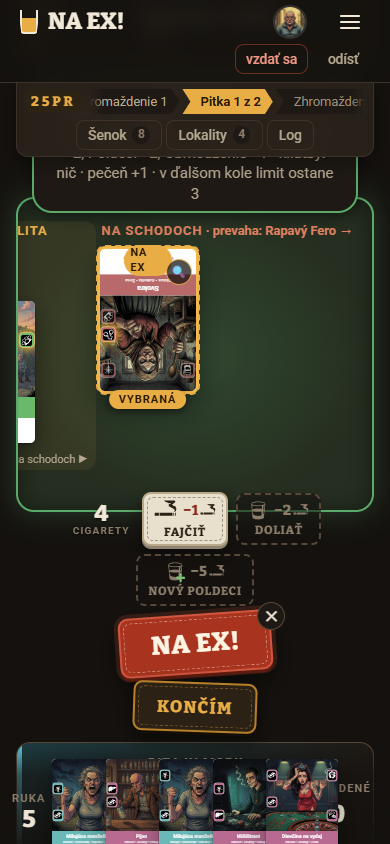
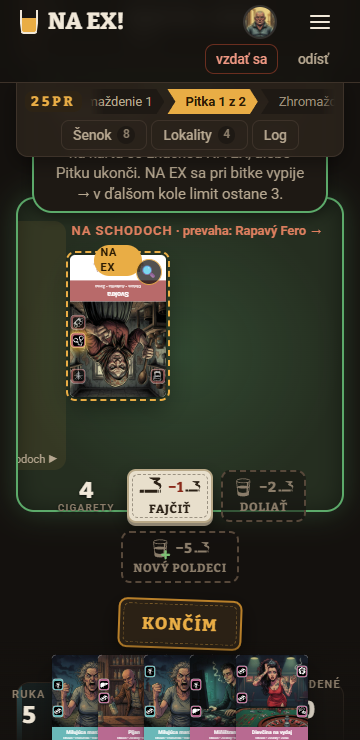
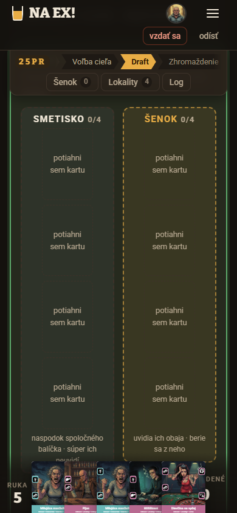
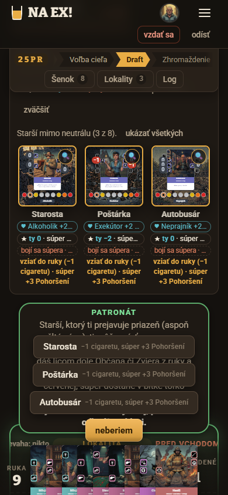
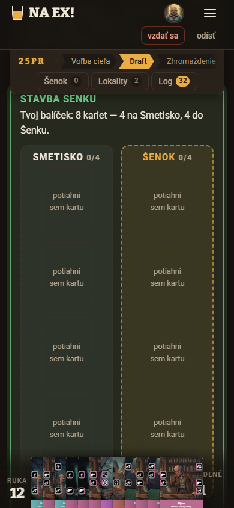
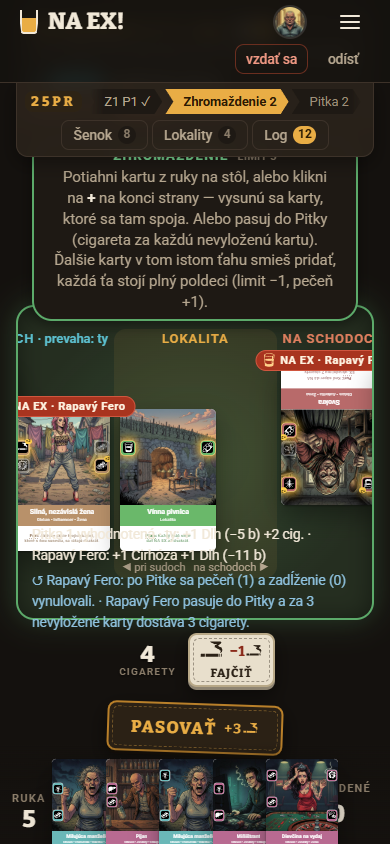
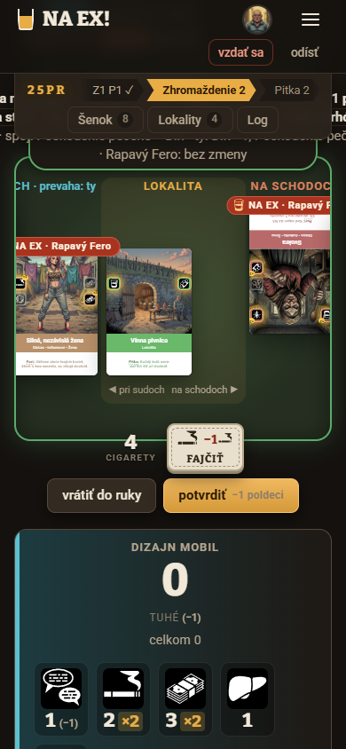
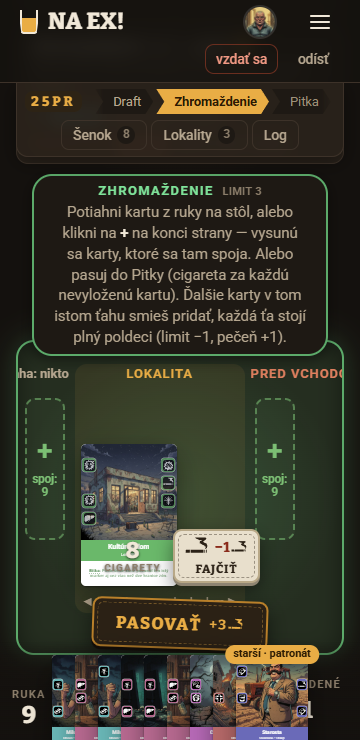

Dizajn · UX · id stol-mobil-20261022-0700 · 2026-10-22 · Roadmapa „Teraz #10 — Celý ťah na mobile“ · Vzhľad rieši UI dizajnér: dizajn-stol-mobil-20261022-0700-ui.html
Celý ťah na mobile — dá sa odohrať bez zbytočného posúvania?
Cieľ: herný stôl /hra na telefóne s rozmermi 390 × 844 a 360 × 740 (dotyk). Kód je apps/web/src/hra/HernaPlocha.tsx, Panely.tsx a hra.css na commite b0227a5, teda to isté, čo beží na živom webe. Používateľ: hráč, ktorý hrá na telefóne (proti človeku alebo proti botovi). Na telefóne má jednu ruku a krátku pozornosť, karty si číta cez lupu. Úlohy v jednom kole: vybrať cieľ (obranca), postaviť šenok, brať zo šenku, rozhodnúť patronát, vykladať karty (aj viac naraz), pasovať, v Pitke dať NA EX alebo skončiť, odpovedať na súperovo NA EX a po bitke zistiť, ako dopadla. Ako som to overoval: v lokálnej partii proti botovi Štamgast/Rapavý Fero (relácia playtest/20261022-070002, 2 kolá) som prešiel každý krok cez skutočný prehliadač s dotykom. Snímky aj merania polohy prvkov (getBoundingClientRect) sú v playtest/dizajn/stol-mobil-20261022-0700/ux/.
VERDIKT: nezabralo (zčasti). Tlačidlá ťahu sú na dosah palca v každom kroku. Lepiaca hrana stola drží „pasovať“, „potvrdiť“, „NA EX!“ aj „končím“ nad rukou, a samotný úkon nevyžaduje posúvanie. Hráč však pri ňom nevidí, čo urobí. Pokyn s náhľadom dôsledku leží pod lepiacou hlavičkou a odhad bitky je o obrazovku nižšie. Pri NA EX tak hráč stláča tlačidlo naslepo: v našej partii bol jediný viditeľný cieľ ten najhorší (bitka 0:2 → 0:6). Dva kroky si posúvanie vyžadujú: stavba šenku (karty ležia ~700 px pod zónami, 16 ťuknutí) a patronát (tlačidlá prekryjú vysvetlenie, kandidáti sú ~450 px nižšie). Po bitke hra preskočí výsledok rovno na ďalšie kolo.
588 / 484 pxvoľná výška na stôl (390 × 844 / 360 × 740). Lepiaca hlavička (83 px) a os kola (74 px) zaberú hore 157 px, ruka dole 99 px.
0 pxposunu treba na stlačenie hlavného tlačidla v Zhromaždení, Pitke aj pri pase. To funguje.
~100 + 300 pxtreba posunúť, aby hráč videl náhľad (pokyn hore) a odhad bitky (pod stolom) pred potvrdením.
15–19 pxširoký je pás karty v ruke pri 9 kartách. WCAG 2.5.8 žiada aspoň 24 px, palec potrebuje 44 px.
Ťah krok po kroku (dnes)
Merané v partii s 5 až 12 kartami v ruke. „Scroll“ znamená zvislé posúvanie stránky, „posun línie“ znamená vodorovný ťah prstom po stole.
Krok
Tlačidlá na dosah palca?
Scroll / posun (390 · 360)
Vidno stav a dôsledok?
Verdikt
Výber cieľa (obranca)
áno — „potvrdiť“, „otočiť“, „späť na výber“ nad rukou
0 px na úkon; auto-posun funguje
zčasti: nadpis „Cieľ kola — klikni na lokalitu“ a pokyn „k tebe / k súperovi“ sú pod lištou
OK
Stavba šenku
nie — „potvrdiť“ je na konci panelu, nie na lepiacej hrane
~700 px dole ku kartám, po každom ťuknutí ~600 px hore pre kontrolu zón; 16 ťuknutí
nie: karta odíde do zóny mimo obrazovky, počítadlo 1/4 nevidno
nezabralo
Branie zo šenku
áno — „hotovo −1 cig.“, „už neťahám“ v paneli pod kartami
0 px
zčasti: nadpis „Tvoj ťah — potiahni 1 alebo 2 karty“ je pod lištou, pilulka text opakuje
OK
Patronát (2 kroky)
390: áno, ale tlačidlá ležia cez vysvetlenie; 360: nie, sú pod rukou
posun línie: 2 z 3 cieľov boli vľavo mimo obrazovky; na 360 nevidno ani lokalitu
nie: náhľad „bitka 0:2 → 0:6 ▼“ je pod lištou
nezabralo
Odpoveď na súperovo NA EX
áno — „bez odpovede“
na odpoveď kartou treba posunúť líniu k „+“
áno: riadok „↺ Rapavý Fero dáva NA EX na…“ je nad tlačidlom
OK
Bitka (výsledok)
—
~200 px hore k účtu bitky, ktorý ostal nad cieľom auto-posunu
nie: hra skočí na Stavbu šenku ďalšieho kola, výsledok ani prehraný patronát nevidno
nezabralo
Pohoršenie a prebytok víťaza bitky som naživo nevidel (bot dvakrát vyhral). Podľa kódu auto-posun v týchto krokoch ide na panel Starších (HernaPlocha.tsx:1058–1063) a na mobile sú zbalení na tých mimo neutrálu. Overiť v playteste s človekom.
Snímky

1 · NA EX na 390: tlačidlo je na dosah, ale náhľad „bitka 0:2 → 0:6 ▼“ je pod lištou (meraná pilulka začína na y = 73, lišta končí na 157).

2 · 360: línia je posunutá na doraz doprava (scrollLeft 381/381). Lokalitu ani dva ďalšie ciele NA EX nevidno a nič na ne neupozorní.

3 · Stavba šenku: po príchode vidno len prázdne zóny (2 × ~550 px). Osem kariet je pod nimi.

4 · Patronát na 390: lepiace tlačidlá ležia cez vysvetlenie a text sa nedá prečítať.

5 · Hneď po prehratej bitke a prehranom patronáte: hra ukazuje Stavbu šenku. Účet „prehral si o 5“ je nad obrazovkou.

6 · Udalosti („Pitka 1 vyhodnotená…“, „↺ Rapavý Fero pasuje…“) sa kreslia cez karty na stole.

7 · Dve karty v jednom ťahu: .tah-polozka s nowrap roztiahne stránku na 441 px a ruka vypadne zo zorného poľa.

8 · 360, 9 kariet: pásy kariet majú 15 px. Keď hráč posunie stránku, aby si prečítal pokyn, tlačidlá prekryjú lokalitu.
Známa chyba, ktorú rieši iná session (bugfix/zarovnanie-novej-karty): nepotvrdená položená karta je zvislo posunutá voči susedovi. Na snímkach návrhu ju vidno, tu ju neriešim.
Signály z playtestov a spätnej väzby
Spätná väzba na živom webe (19 názorov, čítané 2026-10-22) nemá od ľudí ani jeden názor k mobilu. AI playtesteri hrajú cez textového klienta, nie na telefóne. Mobil preto dokladajú snímky a merania vyššie.
Náhľad dôsledku chcú hráči vidieť pred rozhodnutím. Eva Stratégová (#16): „Pri samotnom NA EX hra ukazuje bitku pred a po aj kliatby, pri odpovedi len zmenu akcií“. Hazardná Hela (#13): „Ponuka NA EX ukáže bitku pred a po… takže som výsledok vedel predpovedať“. Na mobile je práve tento náhľad schovaný.
Bitka bez vysvetlenia: Paragrafista Vilo (#7) a Šimon Starešina (#3) píšu, že „hra mlčí“, keď Puška zníži prebytok. Na mobile hráč nevidí ani samotný účet bitky (krok Bitka v tabuľke).
Predošlé dizajny: dizajn-hra-20261021-1240-ux (U1 pás pretiekol, N5 mobilné rozloženie) a dizajn-pokyn-bar-20261021-1639-ux (U4 pás zaberal 27 % výšky). Pás nad rukou je odvtedy zrušený a tlačidlá sú na hrane stola, čo pomohlo. Pokyn sa však presunul na hornú hranu stola, kde ho na mobile zakryje lepiaca os kola.
Audit použiteľnosti
#
Problém
Heuristika
Záv.
Dôkaz
Koho a ako často
Návrh
U1
Náhľad dôsledku (NA EX, vyloženie, pas, dve karty) je v pilulke pod lepiacou lištou. Tlačidlo je na dosah, takže hráč potvrdzuje naslepo.
Viditeľnosť stavu; prevencia chýb
4
snímka 1; pilulka na y = 73, lišta do 157; auto-posun ráta len hlavičku webu: HernaPlocha.tsx:1067 (hore = vyskaHlavicky + 56, os kola má na mobile 74 px)
každý hráč na telefóne, každý ťah
N1
U2
Odhad bitky („Prehrávaš o 2“) je pod stolom aj pod rukou, ~300 px nižšie. Počas ťahu ho hráč nevidí.
Viditeľnosť stavu; rozpoznanie namiesto pamätania
3
.bitka-panel na y = 1597 (scrollY 1001); u10-navrh-nizsie
každý ťah Zhromaždenia a Pitky
N1
U3
Línia sa posúva do strany a vidno z nej ~1,5 karty. Po súperovom ťahu skočí na doraz doprava, takže na 360 nevidno ani lokalitu. Ciele NA EX a „+“ mimo obrazovky nemajú žiadny náznak.
Viditeľnosť stavu; rozpoznanie
3
snímka 2; scrollLeft 351/351 (390) a 381/381 (360); centrovanie HernaPlocha.tsx:417–423
každá Pitka a každý ťah súpera; najviac na 360
N2
U4
Stavba šenku: dve zóny po ~550 px sú nad kartami. Karta po ťuknutí odíde mimo obrazovky, treba 16 ťuknutí a „potvrdiť“ je na konci panelu. Text radí „pravým klikom“.
Efektívnosť; viditeľnosť stavu; zhoda so svetom (dotyk)
Patronát: lepiace tlačidlá ležia cez vysvetlenie (390) alebo sú mimo obrazovky (360). V kroku 2 sú kandidáti pod tlačidlami a rukou a treba ~450 px posunúť.
hráč, ktorému starší prejavuje priazeň (po prehratej bitke)
N4
U6
Výsledok bitky sa po bitke nezobrazí. Auto-posun ide na Stavbu šenku a účet bitky ostane nad ňou (top 1800 < scrollY 1838 + 157). Prehraný patronát (odhodený poldeci) prejde bez slova.
Viditeľnosť stavu; „čo sa práve stalo“
3
snímka 5; ucetBitkyEl pred draftPanel (HernaPlocha.tsx:3489–3491), cieľ auto-posunu :1058–1063
obaja hráči, každá bitka
N4
U7
Ruka sa stláča namiesto posúvania. Pri 6 kartách majú pásy 35–43 px, pri 9 kartách 19 px (390) a 15 px (360), pri 12 kartách rozostup 17 px.
Prvá obrazovka: scoreboard (529 px) a starší sú nad stolom, stôl začína na y ≈ 1070. Keď hráč pozrie body, späť ku stolu musí ručne posunúť ~900 px.
Efektívnosť; minimalizmus
2
merania .scoreboard, .linia-obal; staršie A16 v nezrovnalosti-ux
každé kolo, keď si hráč pozrie body
N2 (súvisí), UI
Mimo mobilu — postrehy pre vývojára a rozhodcu (nie sú medzi 5 návrhmi)
Náhľad NA EX ukazuje len tvoje kliatby (textKliatob(vybrana.kliatby[ja]), HernaPlocha.tsx:2420). Pri NA EX na súperovu Dievčinu na vydaj UI napísalo „kliatby: nič“, kým textový klient ukazoval „súper Dlh +2 (−10 b)“. Hráč tak nevidí hlavný prínos ťahu.
Náhľad NA EX nespomenul, že súperova Svokra hneď ukradne 2 cigarety. V logu to po ťahu bolo („Svokra: hráč 2 ukradol hráčovi 1 2 cigariet“).
Návrhy
Päť návrhov zoradených od rýchlej výhry po väčšiu zmenu toku. Žiadny nemení pravidlá a žiadny neukazuje skrytú informáciu. Všetko, čo zobrazujú, už dnes posiela viewFor().
N1 · Náhľad pri palci rýchla výhramalá
Rieši: U1, U2, U8, U9, U10 (časť). Myšlienka: to, čo tlačidlo spôsobí, má byť napísané hneď nad tlačidlom, v tej istej lepiacej hrane stola. Pilulka hore ostane pre dlhší výklad.
Dnes (NA EX)
Ťuk na kartu so značkou NA EX.
Na hrane sa objaví „NA EX!“, náhľad je v pilulke pod lištou.
Hráč buď stlačí naslepo, alebo posunie stránku ~100 px hore, prečíta náhľad, posunie späť a stlačí. Odhad bitky je ešte ~300 px nižšie.
Po
Ťuk na kartu so značkou NA EX.
Nad „NA EX!“ sa objaví riadok „Svokra · bitka 0:2 → 0:6 ▼ horšie · pečeň +1“ s tmavým pozadím.
Hráč stlačí alebo zruší. Nič neposúva.
Pitka · 360 × 740
NA EX! · menu | os kola: Pitka 1 z 2 · Šenok · Lokality · Log
PITKA 1/2 · tvoj ťah — ťukni na kartu so značkou NA EX, alebo skonči. viac ▾
◀ 2 ciele Svokra+
Svokra · bitka 0:2 → 0:6 ▼ horšie · pečeň +1 · Svokra ti vezme 2 cig.
NA EX!✕
končím
ruka (5)
Zhromaždenie · návrh 2 kariet
os kola: Zhromaždenie 2
ZHROMAŽDENIE · limit 3 viac ▾
línia…
Manželka + Pijan → tvoja strana stojí 1 plný poldeci · Cirhóza ×1 (−6 b) · bitka 0:5 → 1:5 ▲
vrátiťpotvrdiť −1 poldeci
ruka (5)
Tok
Jeden riadok „náhľad pri palci“ nad hlavným tlačidlom. Dá sa použiť pri NA EX, pri návrhu vyloženia (spoj, cena poldeci, kliatby a bitka pred → po), pri pase („+3 cigarety · do Pitky už nevykladáš“) aj pri „končím“ („súper bude mať posledné slovo“). Bez výberu je v tom istom mieste posledná udalosť („↺ Fero pasoval“) na nepriehľadnom podklade, takže sa už nekreslí cez karty. Auto-posun ráta s výškou hlavičky webu aj osi kola. Pilulka hore sa na mobile skráti na nadpis a jednu vetu a zvyšok skryje pod „viac ▾“.
Mikrocopy
„bitka 0:2 → 0:6 ▼ horšie“ / „… ▲ lepšie“ / „= bez zmeny“, teda šípka aj slovo, nie len farba. Pri pase: „Pas: +3 cigarety. Do Pitky už nevykladáš.“ Pri dotyku nahradiť „pravým klikom / Esc“ textom „ťukni na ✕“.
Prístupnosť
Riadok náhľadu má role="status" a aria-live="polite", takže čítačka ho prečíta po výbere cieľa. Tlačidlo „NA EX!“ dostane aria-describedby na tento riadok. „✕“ zväčšiť z 28 × 28 na 44 × 44.
Náročnosť
malá Dáta náhľadu existujú (nahladNaex, plan, odhad), mení sa len miesto, kde sa vypíšu.
Súbory
HernaPlocha.tsx: hranaStola (:3243–3266), textVyberu (:2404–2424), auto-posun (:1067), pokyny Zhromaždenia a pasu (:2040–2110). hra.css: .stol-hrana (:3304, :3726), .pokyn-udalosti (:3353), .tah-polozka nowrap (:3117) zalomiť pod 760 px.
Ako overiť
Na telefóne v playteste sledovať, koľko NA EX zhoršilo vlastnú bitku a koľkokrát hráč pred potvrdením posunul stránku (cieľ: 0). Otázka do playtestu: „Vedel si pred stlačením NA EX!, ako dopadne bitka?“
N2 · Línia s mapou a šípkami k cieľom stredná
Rieši: U3, U11 (súvisí), U12 (súvisí). Myšlienka: na telefóne sa celá línia nezmestí, preto má hráč vedieť, čo je mimo obrazovky, a dostať sa tam jedným ťuknutím.
Dnes (súper vyložil kartu na tvoju stranu)
Stôl skočí na doraz doprava. Na 360 nevidno ani lokalitu.
Hráč nevie, že nová karta je vľavo, ani že tam sú dva ciele NA EX.
Posúva líniu naslepo, alebo otvorí Log, ktorý ukáže najstaršie záznamy.
Po
Nad stolom je mapa línie: [+] [Dievč. nová] [Silná] | LOK | [Svokra] [+].
Ciele NA EX v mape svietia a na kraji stola je šípka „◀ 2 ciele“.
Ťuk na čip alebo šípku posunie líniu na kartu. Po ťahu súpera sa línia vycentruje na jeho novú kartu.
Pitka · 360 × 740
os kola · Šenok · Lokality · Log
+Dievčina · NA EXSilná · NA EX | LOK | Svokra · NA EX+
◀ 2 ciele
Dievč.SilnáLOK
▶ 1
↺ Fero vyložil Dievčinu na tvoju stranu
končím
ruka
Tok
Mapa je jeden riadok čipov (moje modré, súperove červené, lokalita v strede, „+“ na koncoch). Čip ukazuje skratku mena a stav (cieľ NA EX, nová, NA EX položené). Ťuk vykoná scrollIntoView({inline:"center"}) na karte. Šípky na krajoch stola sa objavia len vtedy, keď je mimo obrazovky niečo, na čo sa dá ťuknúť, a ukazujú počet. Centrovanie sa po ťahu súpera nastaví na jeho poslednú kartu, inak na lokalitu. Dnes skončí na doraz, pravdepodobne preto, že posun sa ráta skôr, ako sa karty prepočítajú na šírku (odhad).
Mikrocopy
„◀ 2 ciele NA EX“, „▶ +“, čip „Dievčina · nová“. Log: otvárať na najnovšom zázname s nadpisom „Posledné“.
Prístupnosť
Mapa je <nav aria-label="Mapa línie"> so zoznamom tlačidiel. Názov tlačidla obsahuje meno, majiteľa a stav („Dievčina na vydaj, súperova, na tvojej strane, cieľ NA EX“). Šípky sú tlačidlá 44 × 44 a stav sa nevyjadruje len farbou.
Náročnosť
stredná Nový malý komponent, oprava centrovania a otvorenia logu.
Merať, za koľko sekúnd hráč na 360 nájde a vyberie cieľ NA EX a koľko vodorovných posunov urobí. Otázka: „Vedel si, kam súper položil kartu?“
N3 · Stavba šenku na jednu obrazovku stredná
Rieši: U4, U10. Myšlienka: zóny na telefóne netreba vidieť ako veľké plochy, stačí pri každej karte prepínač a počítadlo na lepiacej hrane. Po štyroch kartách v Šenku hra navrhne zvyšok na Smetisko.
Dnes
Príchod: obrazovka plná prázdnych zón.
Posun ~700 px ku kartám.
8 × (ťuk na kartu → „→ Šenok / → Smetisko“), karta zmizne do zóny mimo obrazovky.
Posun hore pre kontrolu, potom dole k „potvrdiť“.
16 ťuknutí a 2 až 3 dlhé posuny.
Po
Príchod: 8 kariet v mriežke 4 × 2, pod každou prepínač Smetisko | Šenok.
4 ťuknutia na „Šenok“. Zvyšné 4 sa samy označia „Smetisko“ a dajú sa prepnúť.
Na lepiacej hrane je „Smetisko 4/4 · Šenok 4/4 · potvrdiť“.
5 ťuknutí, 0 posunov.
Stavba šenku · 390 × 844
os kola: Draft
STAVBA ŠENKU · 4 do Šenku (uvidia obaja), 4 na Smetisko (naspodok, súper neuvidí)
Svokra
Smet.Šenok
Záhr.
Smet.Šenok
Dvoj.
Smet.Šenok
Krab.
Smet.Šenok
Silná
Smet.Šenok
Fin.
Smet.Šenok
Svokra
Smet.Šenok
Krab.
Smet.Šenok
Smetisko 4/4 · Šenok 4/4 (zvyšok doplnený)
potvrdiť
ruka (5)
Tok
Mriežka 4 × 2 kariet (lupa 🔍 ostáva), pod každou dvojdielny prepínač. Keď je jedna zóna plná, zvyšok sa predvyplní do druhej a označí „doplnené“. Hráč ho môže prepnúť a posledná karta v plnej zóne ustúpi ako dnes. „Potvrdiť“ a počítadlo sú na lepiacej hrane stola ako pri ostatných krokoch. Toto je len predvolenie v rozhraní, pravidlo stavby sa nemení.
Mikrocopy
Hlavička: „Vyber 4 karty do Šenku. Zvyšok pôjde na Smetisko.“ Na dotyku nepísať „pravým klikom“, ale „Zmeníš to ťuknutím na prepínač.“
Prístupnosť
Prepínač je role="radiogroup" s menom karty, segmenty sú 44 px vysoké. Počítadlo má aria-live="polite" („Šenok 3 zo 4“). Ťahanie ostáva ako alternatíva, nie ako jediná cesta (WCAG 2.5.7).
Náročnosť
stredná Mobilná vetva draftPanel a doplnenie zvyšku v doZonyStavby.
Čas stavby na telefóne (dnes odhad 40–60 s, cieľ pod 20 s) a počet ťuknutí. Otázka: „Vedel si počas stavby, ktoré karty idú do šenku?“
N4 · Rozhodnutia mimo stola v spodnom paneli odvážnejší smerstredná až veľká
Rieši: U5, U6, U12 (zčasti). Myšlienka: kroky, ktoré sa netýkajú línie (patronát, účet bitky, prípadne Vízia, výkup na Zbernom dvore, Cintorín), nepatria do pilulky nad stolom. Na telefóne ich ukáže spodný panel (bottom sheet) nad rukou s vlastným posúvaním a s tlačidlom pripnutým dole. Panel VrstvaPanel už existuje pre Log, Šenok a Lokality.
Dnes (prehratá bitka → patronát)
Bitka sa vyhodnotí a hra skočí na Stavbu šenku. Účet bitky je nad obrazovkou.
Po šenku: patronát. Tlačidlá ležia cez vysvetlenie (390) alebo pod rukou (360).
Krok 2: kandidáti sú pod tlačidlami, treba posunúť ~450 px.
Prehra patronátu (odhodený poldeci) prejde bez slova.
Po
Po bitke vyjde panel „Bitka · Kultúrny dom: prehral si o 5“ s posunmi a bodmi a s tlačidlom „ďalej“. Až potom ide hra na šenok.
Patronát je panel s krokmi „1 · Starší“ a „2 · Karta lícom dole“ a s tlačidlom dole.
V paneli sa nič neprekrýva a nič netreba hľadať pod rukou.
Po bitke · 390 × 844
(stôl stlmený)
Bitka · Kultúrny dom: prehral si o 5 Tuhé 0 : 5 · prebytok 5 → Rapavý Fero Kultúrny dom → Rapavý Fero Posuny: Starosta 4 → 1 · Hrobár 4 → 1 … Patronát prehratý: Starosta sa vracia, odhodil si poldeci Body: ty −2 → 4 · Fero 34 → 78
ďalej — stavba šenku
ruka (12)
Patronát · krok 2 z 2
(stôl stlmený)
Patronát — Starosta · −1 cig. · súper +3 Pohoršení Ktorá karta pôjde lícom dole?
Pijan 4:34Miň. 5:32Dievč. 6:30Mačka 4:28 →
čísla = body ty : súper pri výhre
← iný staršívziať Starostu
ruka (9)
Tok
Panel zaberie najviac 70 % výšky a má vlastné posúvanie. Hlavné tlačidlo je pripnuté v jeho spodku nad rukou, „späť / iný starší“ vľavo. Účet bitky čaká na „ďalej“ (jedno ťuknutie navyše za kolo) a vráti sa cez os kola (krok „Bitka“ v osi kola už dnes vie účet znovu otvoriť, Panely.tsx:1136). Pri patronáte krok 1 tvoria riadky starších (priazeň, cena, Pohoršenia, body pri výhre a prehre), krok 2 vodorovný rad kandidátov s popisom „pri výhre ty 6 : súper 30“.
Mikrocopy
„Bitka · Kultúrny dom: prehral si o 5“, „Patronát prehratý — Starosta sa vracia, odhodil si poldeci“, „Vyber kartu, ktorá pôjde lícom dole“ a pri neaktívnom tlačidle dôvod („najprv vyber kartu“).
Prístupnosť
role="dialog" s aria-labelledby na nadpis, fokus sa po otvorení presunie na nadpis a po zatvorení vráti. Účet bitky ohlási aria-live. Panel sa dá zavrieť tlačidlom (bez gesta) a Esc tam, kde je to dovolené.
Náročnosť
stredná až veľká, podľa toho, koľko krokov sa presunie (začať účtom bitky a patronátom).
Súbory
HernaPlocha.tsx: pokyn patronátu :1865–1960, ucetBitkyEl :3166–3200 a jeho miesto :3489, auto-posun :1052–1074; Vrstva.tsx (VrstvaPanel); hra.css. Súvisí s N5 mobilného rozloženia v dizajn-hra-20261021-1240-ux.
Ako overiť
Po každej bitke sa hráča na telefóne spýtať „Kto vyhral a čo sa stalo so staršími?“ (cieľ: odpovie bez otvorenia logu). Čas patronátu od začiatku po potvrdenie.
N5 · Ruka, ktorá sa dá trafiť stredná
Rieši: U7. Myšlienka: na telefóne ruku neskladať do pásov užších ako palec. Pri veľa kartách sa radšej posúva a dá sa rozložiť na celú obrazovku.
Dnes (9 kariet, 360)
Pásy po 15 px, pri lupe sa ľahko trafí susedná karta.
Pri výbere miesta „+“ sa vysunú pasujúce karty (to je dobré), ostatné sú ďalej 15 px pásy.
Po
Ruka je vodorovný pás s scroll-snap, každá karta má aspoň 44 px. Okraj sa stráca do strany a ukazuje „+4 ▶“.
Po výbere „+“ sa pasujúce karty presunú na začiatok a ostatné sa stlmia.
Tlačidlo „ruka 9 ▴“ rozloží ruku do mriežky nad stolom na čítanie a výber.
Ruka · 360 × 740
… stôl …
potvrdiť
ruka 9 ▴
1 spoj1 spojPijanMiň.Dievč.+4 ▶
Tok
Pod 760 px sa ruka nestláča pod 44 px na kartu a zvyšok sa posúva. Po výbere miesta sa poradie zoradí podľa „spoj“ (vysunuté prvé). „Ruka ▴“ otvorí VrstvaPanel s kartami v mriežke a ťuk na kartu ju vyberie rovnako ako dnes.
WCAG 2.5.8: ciele aspoň 24 px, odporúčané 44 px. Karty v ruke sú tlačidlá s menom a počtom spojov („Silná žena, 1 spoj“), poradie fokusu ide zľava doprava, posúvanie má aj tlačidlá ◀ ▶ a nezávisí od gesta.
Náročnosť
stredná CSS ruky a zoradenie, panel ruky z existujúceho VrstvaPanel.
Počet omylov („vrátiť do ruky“ hneď po návrhu) na telefóne pri 8 a viac kartách. Otázka: „Trafil si vždy kartu, ktorú si chcel?“
Odporúčané poradie
N1 Náhľad pri palci ako prvý. Je malý, opraví jediný problém so závažnosťou 4 (NA EX naslepo) a k tomu pretečenie stránky a udalosti cez karty. Funguje aj na počítači.
N3 Stavba šenku, lebo ju hrajú obaja hráči v každom kole a dnes je to najdlhšie posúvanie.
N2 Mapa línie s opravou centrovania. Spolu s N1 dá Pitke na telefóne celý obraz.
N5 Ruka. S pribúdajúcimi kolami sa ruka zväčšuje (bez limitu), takže problém rastie.
N4 Spodný panel až po N1 až N3, ako začiatok mobilného rozloženia. Začať účtom bitky, potom patronátom.
Po N1 a N3 navrhujem roadmapovú položku „Celý ťah na mobile“ overiť znovu tou istou cestou (partia proti botovi, oba rozmery, meranie posunu v každom kroku).
Otázky
Na Michala
Ruka: v kóde je zámer „ruka vždy v jednom rade, pri veľa kartách sa prekrývajú“ (HernaPlocha.tsx:3758). Smie sa na telefóne namiesto stláčania posúvať do strany (N5)?
Stavba šenku: smie rozhranie po 4 kartách v Šenku predvyplniť zvyšok na Smetisko (dá sa zmeniť)? Pravidlo sa nemení, je to len predvolenie.
Účet bitky: má hra po bitke na telefóne počkať na „ďalej“? Stojí to jedno ťuknutie za kolo, zato hráč vždy uvidí, ako bitka dopadla.
Scoreboard nad stolom (529 px): zbaliť ho na mobile do jedného riadku „Spolu ty −2 : Fero 40 ▾“? Toto je skôr otázka pre UI návrh.
Do playtestu (na telefóne)
Vedel si pred stlačením NA EX!, ako dopadne bitka? Kde si to videl?
Vedel si, kam súper položil kartu a na čo všetko môžeš dať NA EX?
Koľko času ti zabrala stavba šenku? Vedel si, ktoré karty idú do Šenku?
Po bitke: kto vyhral, o koľko a čo sa stalo so staršími? (bez otvorenia logu)
Trafil si v ruke vždy kartu, ktorú si chcel?
Sledovať: zvislé posuny v jednom ťahu (cieľ: 0 na úkon, najviac 1 na kontrolu), vodorovné posuny línie a omyly „vrátiť do ruky“.